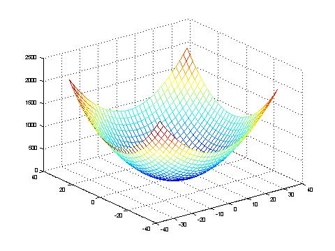

Because of its simplicity every optimization-algorithm should be able to find its global minimum at x=[0, 0, ... , 0]

Kenneth De Jong. An analysis of the behaviour of a class of genetic adaptive systems. Dissertation, University of Michigan, 1975. Diss. Abstr. Int. 36(10), 5140B, University Microflims No. 76-9381.